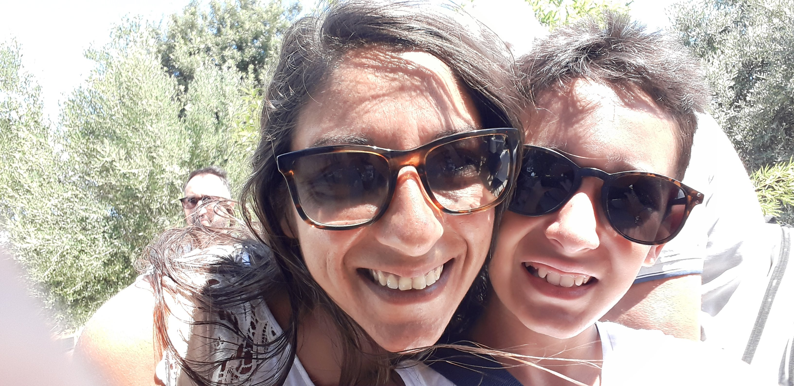
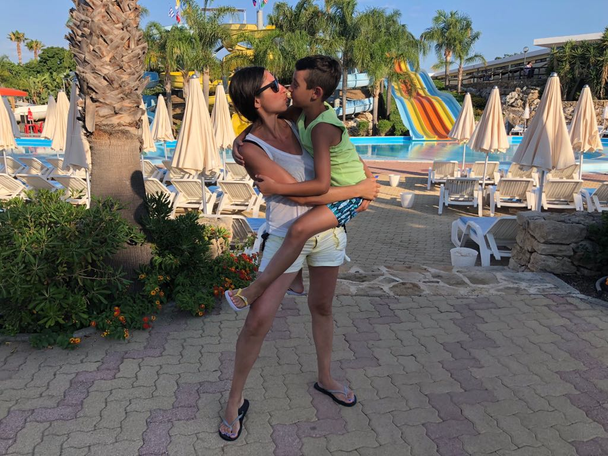
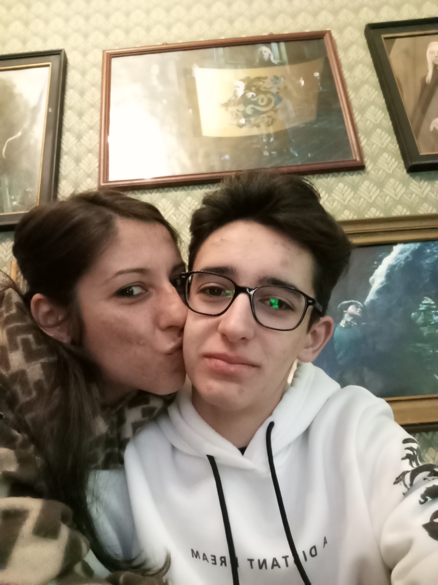
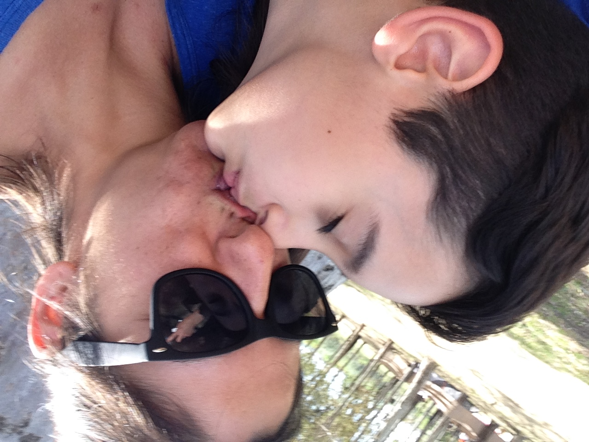
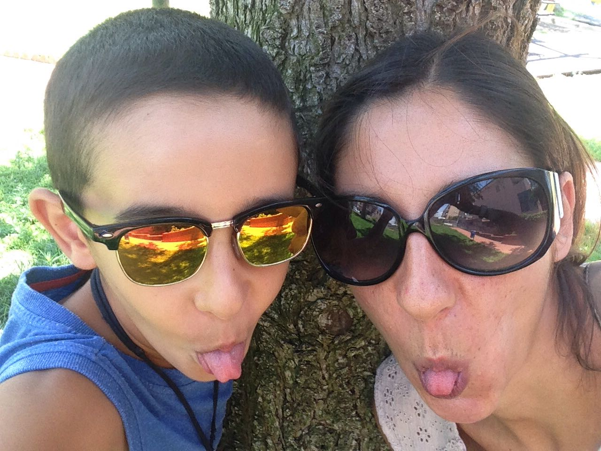

Lettera alla mia mami
mami, ho scritto una lettera così a ognuno di voi. non ho qualcosa di specifico da dirti, solo ricordarti che ti amo tantissimo e in quest'anno mi è mancata un sacco la quotidianità di casa, so che purtroppo non lo dico spesso o non lo dimostro, ma è così. io purtroppo non so al cento per cento tutto quello che hai affrontato fino ad oggi e che affronti quotidianamente o tutto quello che hai passato in quest'anno con me dall'altra parte del mondo, posso solo immaginarlo, come facevo in passato e come farò in futuro. posso dirti che noto almeno un po' tutto ciò che fai, che ti ringrazio e che sono fiero di te. anche nei giorni in cui vorresti non alzarti dal letto, tu ti alzi e sopporti tutto: i nostri scatti di ira, i nostri problemi, ci supporti, ci aiuti nel prepararci per la giornata, cucini per noi, mantieni la casa, e l'ordine della famiglia, sopporti un peso enorme in silenzio che nessuno può vedere, ma io so che c'è. io ti ringrazio un sacco di questa esperienza che mi avete permesso di fare, posso solo immaginare quanto sei stata male soprattutto all'inizio. io ti ringrazio per essere mia madre, perché se oggi tutti dicono che sono una brava persona, un bravo ragazzo, un buon amico, è grazie a te, che col tuo cuore d'oro mi hai educato e cresciuto per averne almeno un po' anch'io, anche quando tutti se ne approfittano, anche quando la cosa migliore sarebbe smettere di ascoltarlo, tu continui ad avere fiducia in esso e che porti a qualcosa di buono, ti prometto continuerò a migliorare per avvicinarmi sempre di più a te. non dimenticherò mai tutti i sacrifici che fai, che siano come quelli detti prima, o economico, che finché i tuoi figli non hanno tutto tu non vuoi avere niente, e credimi che non è una cosa scontata questa. ricordo le nostre giornate insieme, quando ancora eravamo solo io e tu, anche se erano cose semplici come il centro commerciale, il parco. non dimenticherò neanche tutte le volte ti sei aperta con me per i tuoi problemi e le tue preoccupazioni, mi piacerebbe lo facessi di più, so di essere tuo figlio, ma posso anche essere tuo amico e supportarti anche solo un minimo rispetto a quanto fai tu con me, tutti hanno bisogno di qualcuno che li ascolti e li aiuti di tanto in tanto. io ti ringrazio di tutto ciò che hai fatto e fai, penso che sia un obbligo dei genitori prendersi cura dei propri figli, ma anche che non sia una cosa scontata che i genitori li facciano, in che misura. avrei molto altro da dire ma oltre che non poter scrivere un poema, al momento non riesco neanche a continuare, però mi piacerebbe ogni tanto ci prendessimo dei momenti, delle occasioni solo noi due per parlare di problemi dell'uno o dell'altro, di entrambi, e onestamente ogni tanto mi piacerebbe avere più momenti solo io e tu che non siano solo per parlare. voglio anche cercare di dimostrarti più spesso l'affetto che meriti tu in particolare ma anche in generale, e fare più cose di qualsiasi altro tipo con te come mamma e amica mia. detto questo ti ripeto che io ti amo tantissimo e non vedo l'ora di tornare, quindi, a tra poco mami
(La canzone non c'entra nulla ma ne ho messa una mi ricordasse di noi due)




